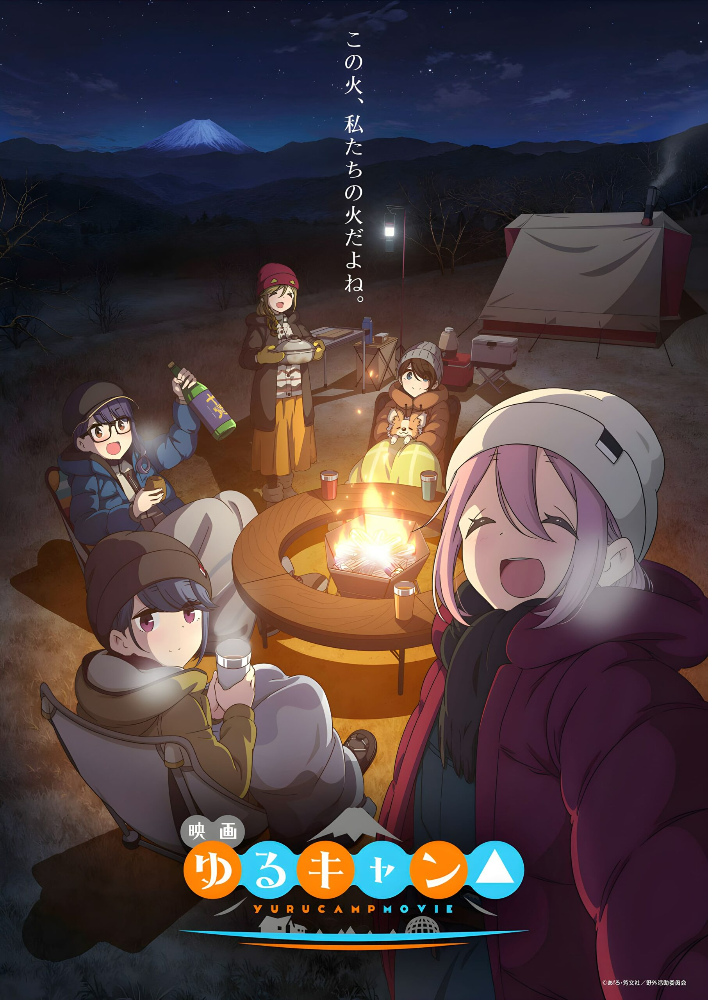

La película de Yuru Camp consigue una fabulosa recaudación inicial
Mantan Web reportó que el largometraje de la franquicia multimedia de Yuru Camp (Laid-Back Camp), estrenado el pasado 1 de julio en los cines de Japón, consiguió una recaudación acumulada de 350 millones de yenes (más de 2.58 millones de dólares estadounidenses), a través de más de 250 mil entradas vendidas, en sus primeros tres días en salas de cine del país.
La segunda temporada de Yuru Camp se estrenó en la temporada de Invierno-2021 (Enero-Marzo) en Japón y contó con un total de trece episodios, con Crunchyroll a cargo de su distribución en Occidente. Por otra parte, Afro comenzó la publicación del manga en la revista Manga Time Kirara Forward de la editorial Houbunsha en julio de 2015.
Sinopsis de Yuru Camp
Si bien la escapada perfecta para la mayoría de las chicas de su edad pueden ser unas vacaciones extravagantes con sus seres queridos, la manera ideal de Rin Shima es acampar sola en la base del Monte Fuji. Desde armar su tienda de campaña hasta recoger leña, ella siempre ha hecho todo por sí misma y no tiene planes de dejar su pequeño mundo solitario. Sin embargo, lo que comienza como una de las sesiones de campamento habituales de Rin termina de alguna manera como una reunión sorpresa para dos cuando la perdida Nadeshiko Kagamihara se ve obligada a refugiarse en su campamento.
Originalmente con la intención de ver la pintoresca vista del monte Fuji por sí misma, los planes de Nadeshiko se interrumpen cuando termina por quedarse dormida en la mitad de su destino. Sola y sin otra opción, busca la ayuda de la única persona cercana. A pesar de sus apresuradas presentaciones, las dos chicas disfrutan de la fría noche juntas, comiendo ramen y conversando mientras la fogata las mantiene calientes. E incluso después de que la hermana de Nadeshiko finalmente la recogiera más tarde esa noche, ambas chicas reflexionaron en silencio sobre la posibilidad de hacer juntas otro viaje de campamento.